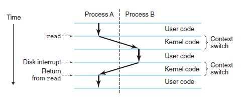
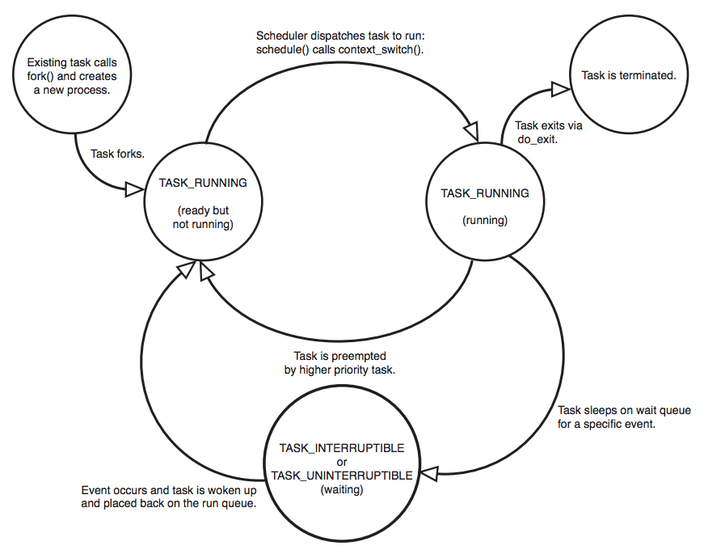

¿Qué es un proceso?
Un proceso es una abstracción de una programa en ejecucion. Y un programa es un conjunto de código maquina y dato almacenado en una imagen de ejecutable. Los procesos son tareas separadas, cada uno ejecuta en su propio espacio de direcciones virtuales y no es capaz de interactuar con otro, excepto mediante mecanismos admnistrados por el kernel. Esto hace que si un proceso cae no afectará a otros procesos del sistema.
Concurrencia
El sistema operativo proporciona la illusion al programa que es el único que se ejecuta en el sistema. El programa aparenta tener un uso exclusivo de procesador, la memoria principal y los dispositivos de E/S. Multiples procesos están permitido ejecutar concurrentemente en el mismo sistema, y cada uno tiene su uso exclusivo de hardware. El sistema operativo mantiene todas las informaciones asociadas a proceso. Además de los códigos, también incluye una serie de recursos relacionados llamado contexto:
- archivos abiertos
- señales pendientes
- datos de kernel
- estado de proceso
- mapa de memoria
- hilos de ejecución
- sección de variables globales
- Pueden haber varias replicas de un mismo programa en ejecución.
- Pueden existir dos o más procesos compartiendo varios recursos, como archivos abiertos o un espacio de memoria.
Cambio de contexto
Cuando el sistema operativo decide transferir el control desde el
proceso actual a alguuno otro, se realiza un
cambio de contexto, que guarda el contexto del proceso
actual y recupera el contexto del nuevo proceso. El nuevo proceso
sigue ejecutando exactamente donde lo dejó.

Hilos
Los hilos también llamado threads, su nombre english, son objectos de actividades del proceso. Cada uno ejecutando en el contexto de proceso y compartiendo el mismo código y dato global. Multi-theading es una forma de hacer los programas ejecuten más rapidos cuando tenemos multi-cores.
Cada thread incluye:
- un contador de programa
- pila de proceso
- conjunto de registros de procesador
Proceso en Linux
Estado del proceso

Ejecucion:
El proceso que toma el control de sistema, CPU, y los
hardwares.
Preparado
Está en la cola de espera que le asignen el control
Bloquedo
El proceso espera un evento o un recurso.
Terminado
El proceso que ha terminado, normalmente al recibir una señal.
Zombie
Un proceso muerto que aún no ha elimado del vector.
Estructura de dato
En Linux cada proceso está representada por
task_struct. El numero de máximo de procesos en el sistema está limitado por
el tamaño de vector de tarea de 512 entradas. A medida que crea
nuevo proceso se agrega al vector de tareas.
TODO: La
estrucura que modela
Identificador
Todo proceso en el sistema tiene un identificador de proceso pid_t pid. También tiene identificadores de usuario y de grupo *const struct cred __rcu cred que se usa para controlar el acceso a los archivos y dispositivos en el sistema.
Relación
En Linux no hay proceso independiente de otro. En task_struct matiene una referencia a proceso padre *struct task_struct __rcu parent, excepto para el proceso inicial que no tiene proceso padre. Nuevos procesos no son creaddos, sino son copiado. Cada proceseo mantiene
Comunicación interproceso
TODO: Inter-Process Communication
Temporizador
El kernel realiza un seguimiento de tiempo de creación struct task_cputime cputime_expires, tiempo en modo kernel, tiempo en modo usuario, task_cputime. También es posible que un proceso especifica un temporizador que al expirarse envia una señal al proceso.
Sistema de archivo
Proceso puede abrir y cerrar archivos cuando quiera y el proceso mantiene los punteros struct files_struct *files a cada uno de los archivos abierto, así como punteros a dos inodos VFS. Cada inodo VFS describe de forma única un archivo o directorio dentro de un sistema de archivos también proporciona una interfaz uniforme a los sistemas de archivos subyacentes. El primero es la raiz del process, su directory home, el segundo es el directorio actual del proceso.
Memoria virtual
TODO
Contexto de procesador
TODO
Gestión de proceso
En linux, la llamada de sistema fork() definido con el macro SYSCALL_DEFINE0(fork), create un nuevo proceso duplicando uno existente.
- El proceso que llama fork() es el padre, mientras que el nuevo proceso es el hijo.
- El padre continua la ejecución y el hijo continua la ejecucion en el mismo punto donde la llamada a fork() devuelve.
- La llamada de sistema fork() devuelve del kernel dos veces, uno en el proceso padre y otra vez en el hijo recién creado.
TODO: bibliografia
Bibliografía
- Process Management - Shichao’s Notes
- Computer Systems: A Programmer’s Perspective pag. 16-17, 712-771
- Chapter 4 Process - The Linux Documentation Project
- The GNU C Library